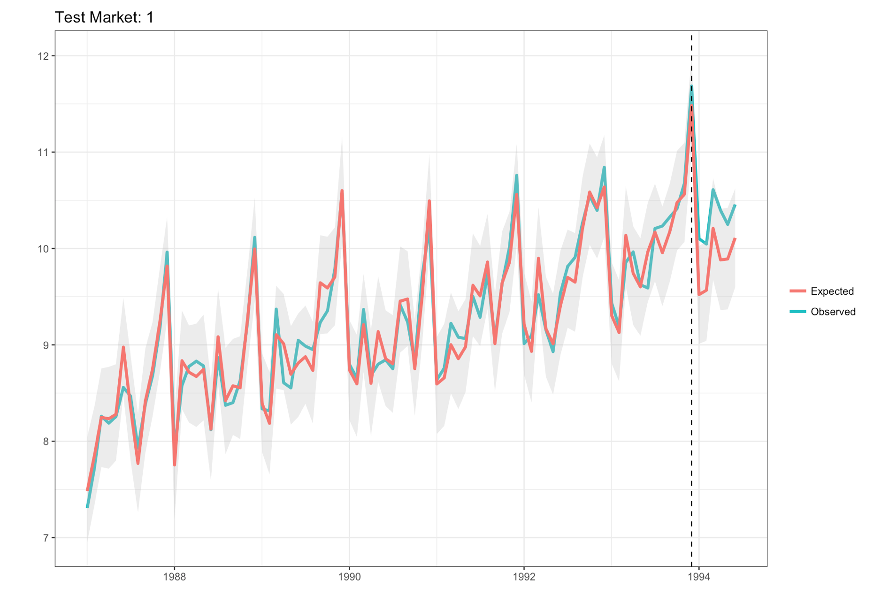

Establishing Causality with Counterfactual Prediction
Sometimes a controlled experiment isn’t an option yet you want to establish causality. This post outlines a method for quantifying the effects of an intervention via counterfactual predictions.
- Overview
- Souvenir Sales, Australia, and Wacky Inflatable Tube Men
- Creating the Synthetic Data Set
- Selecting a Control Time Series with Dynamic Time Warping
- Generating Counterfactual Predictions
Overview
Businesses have several “levers” they can pull in an effort to boost sales. For example, a series of advertisements might be shown in a particular city or region with the hopes of increasing sales for the advertised product. Ideally the cost associated with the advertisement would be outstripped by the expected increase in sales, visits, conversion, or whatever KPI (key performance indicator) the business hopes to drive. But how do you capture the ROI of the advertisement? In a parallel universe, where all experiments are possible, we would create two copies of the same city, run the advertisement in one of them, track our metric of interest over the some period of time, and then compare the difference between the two cities. All potential confounding variables, such as differences in seasonal variation, viewership rates, or buying preference, would be controlled. Thus any difference (lift) in our KPI could be attributed to the intervention.
Souvenir Sales, Australia, and Wacky Inflatable Tube Men
We can’t clone cities, but there is a way to statistically emulate the above situation. This post provides a general overview of how to generate a counterfactual prediction, which is a way to quantify what would’ve happened had we never run the advertisement, event, or intervention.
Incremental Sales, ROI, KPIs, Lift – these terms are somewhat abstract. Australia, Souvenirs, Wacky- Inflatable-Tube-Men (WITM for short) – that all seems pretty straight-forward. So imagine you run a souvenir shop near the beach in Australia and you’re looking for ways to attract additional foot traffic and (hopefully) increase sales. You decide to purchase this guy below, hoping it will draw attention to your store, increase foot traffic, and produce more souvenir sales.

Being a savy business owner, you’re interested in the effect of your new WITM on sales. Does having this form of advertisement actually drive sales beyond what would’ve happened in the absence of any WITM? You look to the other six souvenir shops in seperate parts of town to answer this question. The other souvenir shops will serve as a control group because they don’t have a WITM. Additionally, the other shops are located far enough away from your shop so there is no way for their sales to be affected by your WITM (this is a critical assumption that in real-world contexts should be verified). After accounting for base-line differences in sales between your shop and the control shops, you build a forecast – or counterfactual prediction – premised on what would’ve happened in your shop had the WITM intervention never taken place. This prediction will then serve as the baseline from which to compare what actually happened to sales.
In short, you (the shop owner) are faced with two tasks:
- Identifying which of control shop(s) are most similar to your shop
- Generating the counterfactual prediction
I’ll go through each of these steps at a high level, just to give you a general idea of logic underlying the process. For an excellent, more in-depth explanation of the technical details check out this post by the author of the MarketMatching package, which we will leverage to address both tasks.
Creating the Synthetic Data Set
Let’s first download the dataset and load up the required libraries. You can find the dataset here.
libs = c("devtools", "CausalImpact", "forecast",
"dplyr", "forcats", "MarketMatching",
"knitr", "ggplot2", "artyfarty")
lapply(libs, require, character.only = TRUE)
# Uncomment if you dont have the package installed
#devtools::install_github("klarsen1/MarketMatching", build_vignettes=TRUE)
#library(MarketMatching)
file_name = 'monthly_souvenir_sales.csv'
working_dir = 'your_working_directory'
souvenir = read.csv(paste0(working_dir, file_name))
names(souvenir) = c("Month", "Sales")
souvenir$Date = as.Date(paste0(as.character(souvenir$Month), "-01"),
format = "%Y-%m-%d")
The dataset is total monthly souvenir sales for your shop, starting in January of 1987 and running through December of 1993. Let’s take a high level glance at our time series to see if we need to clean it up.
color_values = c("#D9D9D9", "#33C5F3", "#F16C62", "#A8CE38", "#FCB51E", "#F92672")
my_plot_theme = function(){
font_family = "Helvetica"
font_face = "bold"
return(theme(
axis.text.x = element_text(size = 18, face = font_face, family = font_family),
axis.text.y = element_text(size = 18, face = font_face, family = font_family),
axis.title.x = element_text(size = 20, face = font_face, family = font_family),
axis.title.y = element_text(size = 20, face = font_face, family = font_family),
strip.text.y = element_text(size = 18, face = font_face, family = font_family),
plot.title = element_text(size = 24, face = font_face, family = font_family),
legend.position = "top",
legend.title = element_text(colour = "white", size = 16,
face = font_face,
family = font_family),
legend.text = element_text(colour = "white", size = 14,
face = font_face,
family = font_family)
))
}
ggplot(souvenir, aes(x = Date, y = Sales)) + geom_point(color = color_values[1],
size = 2) +
geom_line(color = color_values[1],
size = 2) +
theme_monokai_full() +
my_plot_theme()
Notice that the seasonal changes become more volatile across time, particularly in the past couple years. The forecasting model we’ll be using is additive and thus cannot account for a multiplicative time series, so we’ll need to log-transform sales before we build a model.
souvenir_ts = ts(log(souvenir$Sales),
frequency = 12,
start = c(1987, 1))
Now our seasonal fluctuations are roughly constant across time and can be described with an additive model. Next we’ll introduce some random noise to the time series and then generate a 6-month ahead forecast. A constant (0.5 SDs) will be added to each of the forecasted values. This is to simulate the positive effect that the WITM intervention had on sales during the 6-month intervention period. We’ll then plot the results to get a better idea of when each of aforementioned events is happening.
set.seed(123)
# add noise to log-transformed sales
souvenir_ts = souvenir_ts + rnorm(length(souvenir_ts), 0, (sd(souvenir_ts) * 0.25))
# define length of intervention
trial_period_months = 6
simulated_intervention = forecast(auto.arima(souvenir_ts), trial_period_months)
# define effect size
effect_size = 0.5
# create simulated effect
simulated_intervention = simulated_intervention$mean + (sd(souvenir_ts) * effect_size)
monthly_log_sales = c(souvenir_ts, simulated_intervention)
study_dates = seq(max(souvenir$Date),
by = "month",
length.out = (trial_period_months + 1))
study_dates = study_dates[2:length(study_dates)]
intervention_start = study_dates[1]
souvenir_sim = data.frame(measurement_date = c(souvenir$Date, study_dates),
sales = c(souvenir_ts, simulated_intervention),
store = "1")
ggplot(souvenir_sim, aes(x = measurement_date, y = sales)) +
theme_monokai_full() +
my_plot_theme() + ylab("Log Sales") + xlab("Date") +
annotate("rect", xmin = min(souvenir_sim$measurement_date),
xmax = intervention_start,
ymin = min(souvenir_sim$sales),
ymax = Inf,
fill = color_values[2],
alpha = 0.2
) +
annotate("rect", xmin = intervention_start,
xmax = max(souvenir_sim$measurement_date),
ymin = min(souvenir_sim$sales),
ymax = Inf,
fill = color_values[3],
alpha = 0.2
) +
geom_point(color = color_values[1],
size = 2) +
geom_line(color = color_values[1],
size = 2)
The blue shaded region is the time before the intervention, while the red shaded region is the time during the intervention. It’s hard to determine if the level (mean) has increased for the last 6 months of our time series. The uptick could be due to seasonal variation or where the trend of the series was naturally going (Obviously we know this to be false :) ). We want to rule these explanations out. In order to do so, we’ll make a counterfactual prediction based on the other control shops.
In this example we’ll use the original time series as a basis to create six other time-series. Three will be the original time series with an added gaussian error term while the other three will be random walks. All six will serve as initial candidates for our control shops. Let’s generate the time-series for our comparison shops.
# create dataframe to hold the 6 reference stores
similar_df = data.frame(NULL)
similiar_stores = c("2", "3", "4")
# generate time series for similar stores
for(i in 1:length(similiar_stores)){
temp_ts = souvenir_ts
# add a bit of random noise
temp_ts = data.frame(sales = temp_ts + rnorm(length(temp_ts),
0,
(sd(temp_ts) * 0.25)))
# fit a arima model to the simulated sales data
temp_fit = auto.arima(ts(temp_ts$sales, frequency = 12,
start = c(1987, 1)))
# generate forecast
forecasted_values = data.frame(forecast(temp_fit, h = trial_period_months))$Point.Forecast
temp_ts = data.frame(sales = c(temp_ts$sales, forecasted_values),
store = similiar_stores[i])
similar_df = rbind(similar_df, temp_ts)
}
# generate time series for random stores
random_stores = c("5", "6", "7")
for(r in random_stores){
temp_random = data.frame(sales = rnorm((length(souvenir_ts) + trial_period_months),
mean = mean(souvenir_ts),
sd = sd(souvenir_ts)),
store = r
)
similar_df = rbind(similar_df, temp_random)
}
# create dataframe to hold all of the time series
similar_df$measurement_date = rep(seq(as.Date("1987-01-01"),
by = "month",
length.out = nrow(souvenir_sim)),
length(unique(similar_df$store)))
#
similar_df = rbind(souvenir_sim, similar_df)
We now have all of time series in a neat dataframe. Let’s visualize what that looks like.
ggplot(similar_df, aes(x = as.Date(measurement_date), y = sales, color = store)) + geom_point() + geom_line() +
facet_wrap(~store, ncol = 1) +
theme_monokai_full() +
my_plot_theme() + ylab("Sales") +
xlab("Date") +
theme(strip.text.x = element_text(size = 14, face = "bold"),
axis.text.y = element_blank(),
legend.position = "none")
Store 1 is our store, while stores 2-7 are the potential control stores. In order to make inferences about the effect of our intervention, we want to identify a seperate store(s) with similar sales history to serve as the control store(s). We’ll keep it simple here and only use a single store, but you could potentially use any number of stores as a control. I’ll discuss in the next section how we go about defining and identifying similarity.
Selecting a Control Time Series with Dynamic Time Warping
We’ll implement a technique known as Dynamic Time Warping. It sounds like something you’d hear in a Steven Hawking TED talk, but it’s just a way to measure the similarity between two sequences. A common approach for measuring the similarity between sequences is to take the squared or absolute difference between them at the same period in time and then sum up the results. The main drawback with this approach is that it fails to account for seasonal changes that might be shifted or delayed but still occur in the same order. It’s like if two people said the same sentence but one person said it much slower than the other. The order and content of the utterance is the same but the cadence is different. This is where Dynamic Time Warping shines. It stretches or compresses (within some constraints) one time series to make it as similar as possible to the other. So an individual’s speech cadence wouldn’t affect our ability to determine the similarity between two seperate utterances.
In the current context we aren’t concerned with leading or lagging seasonality, as a random error was added to each value in the absence of any forward or backward shifts. However, this can be an issue when dealing with phenomena that are impacted by, say, weather. For example, imagine you sell a seasonal product like ice cream. Ice cream sales go up when the weather gets hot, and perhaps it warms up in some parts of the same region before others. This is a case when you might see the exact same sales patterns but some emerge a few months before or after others. Therefore, it is important to use a matching method that can account for these shifts when comparing the similiarity of two time-series.
We’ll leverage the MarketMatching package to select our control time series. The selection process is done via DTW. We’ll also transform sales back to the original raw values prior to any market-matching/inference.
# exponentiate sales to transform log sales back to original units
similar_df$sales = exp(similar_df$sales)
most_similar_store = MarketMatching::best_matches(data = similar_df,
id_variable = "store",
date_variable = "measurement_date",
matching_variable = "sales",
warping_limit = 3,
matches = 1,
start_match_period = min(similar_df$measurement_date),
end_match_period = unique(similar_df$measurement_date)[(length(unique(similar_df$measurement_date)) -
trial_period_months)]
)
That was too easy! This table indicates that the pre-intervention sales for Store Number 3 are the most similar to those in Store Number 1. Thus we’ll use Store 3 to generate our counterfactual prediction.
Generating Counterfactual Predictions
This is the inference part – namely, can we infer that our intervention impacted sales?
results = MarketMatching::inference(matched_markets = most_similar_store,
test_market = "1",
end_post_period = max(similar_df$measurement_date))
print(results)
## ------------- Inputs -------------
## Test Market: 1
## Control Market 1: 3
## Market ID: store
## Date Variable: measurement_date
## Matching (pre) Period Start Date: 1987-01-01
## Matching (pre) Period End Date: 1993-12-01
## Post Period Start Date: 1994-01-01
## Post Period End Date: 1994-06-01
## Matching Metric: sales
## Local Level Prior SD: 0.01
## Posterior Intervals Tail Area: 95%
##
##
## ------------- Model Stats -------------
## Matching (pre) Period MAPE: 16.97%
## Beta 1 [3]: 0.9482
## DW: 2.14
##
##
## ------------- Effect Analysis -------------
## Absolute Effect: 60852.26 [35523.48, 88542.17]
## Relative Effect: 49.5% [28.9%, 72.03%]
## Probability of a causal impact: 99.8983%
Let’s breakdown the Effect Analysis portion of the output. The Absolute Effect indicates a lift of approximately 60.8K in sales over the 6-month intervention period. Assuming we paid our $500 for our WITM, the ROI here is huge. The Relative Effect provides a standardized view. Most real-world interventions involving people provide a few percentage-points lift; in this case we observed an estimated lift of 49.5%, which is extremely rare. Finally, the Probability of a causal impact indicates that the likelihood of observing this effect by chance is extremely low (e.g., 100 - 99.89). We can see what was just described above in visual format below.
This drives home that our intervention had a clear effect. But wait! The model used to generate the counterfactual prediction above assumed an additive time-series, which is apparent from the fitted model (i.e., it systematically under/overestimated the big changes). We transformed sales back to the original units for ease-of-interpretation, but we would’ve achieved a better fit – and in turn more precise estimates – had we used the log of sales. Let’s see how our estimates change when we use log sales as opposed to raw sales.
# log sales
similar_df$sales = log(similar_df$sales)
most_similar_store = MarketMatching::best_matches(data = similar_df,
id_variable = "store",
date_variable = "measurement_date",
matching_variable = "sales",
warping_limit = 3,
matches = 1,
start_match_period = min(similar_df$measurement_date),
end_match_period = unique(similar_df$measurement_date)[(length(unique(similar_df$measurement_date)) -
trial_period_months)]
)
results = MarketMatching::inference(matched_markets = most_similar_store,
test_market = "1",
end_post_period = max(similar_df$measurement_date))
print(results)
## ------------- Inputs -------------
## Test Market: 1
## Control Market 1: 3
## Market ID: store
## Date Variable: measurement_date
## Matching (pre) Period Start Date: 1987-01-01
## Matching (pre) Period End Date: 1993-12-01
## Post Period Start Date: 1994-01-01
## Post Period End Date: 1994-06-01
## Matching Metric: sales
## Local Level Prior SD: 0.01
## Posterior Intervals Tail Area: 95%
##
##
## ------------- Model Stats -------------
## Matching (pre) Period MAPE: 1.52%
## Beta 1 [3]: 0.9231
## DW: 2.03
##
##
## ------------- Effect Analysis -------------
## Absolute Effect: 2.68 [1.39, 4.07]
## Relative Effect: 4.53% [2.36%, 6.87%]
## Probability of a causal impact: 99.7951%
Using log-sales instead of raw sales substantially improved the fit of our model. We know this by comparing the MAPE, or Mean Average Percent Error, of our log-transformed model (1.52%) relative to our raw model (16.97%). In this case a lower MAPE indicates a better model fit. Thus, we should consider the estimates from our log-transformed data to be more reliable than those from the previous, raw data. It is interesting to note how our interpretation changes so much! Instead of a 49.5% lift, the estimate is now 4.5%. Finally let’s visualize the updated estimate below.

Hopefully this post gave you a better idea of how to quantify the impact of an intervention. The ability to run a true randomized control study in the real-world is often too expensive or simply not possible. In many cases creating a statistical control group is the best (and cheapest) option available. For more information about the forecasting methodology used produce counterfactual predictions, check out the bsts and CausalImpact packages. Happy experimenting!
comments powered by Disqus